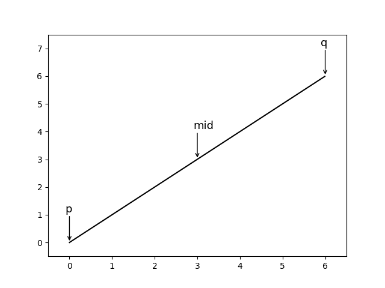
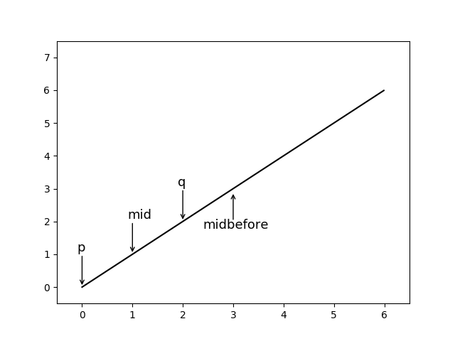
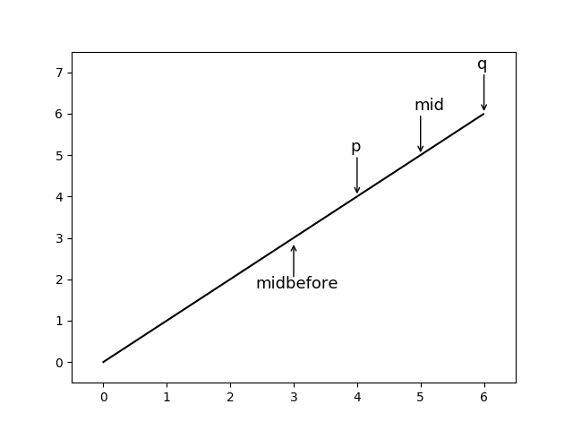
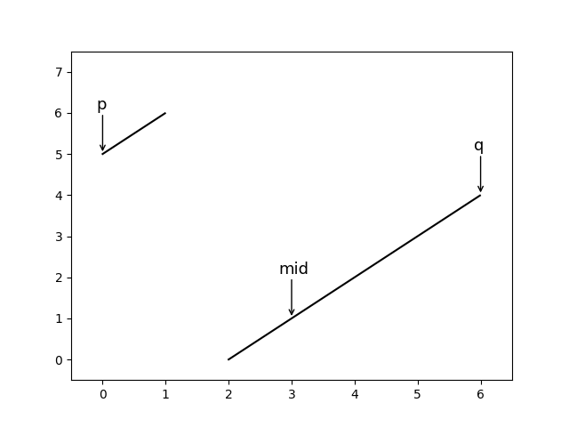
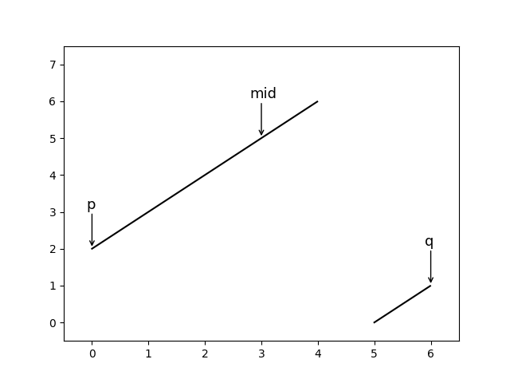

问题:
leetcode: Problem #33
Search in Rotated Sorted Array
Suppose an array sorted in ascending order is rotated at some pivot unknown to you beforehand.
(i.e.,
0 1 2 4 5 6 7might become4 5 6 7 0 1 2).You are given a target value to search. If found in the array return its index, otherwise return -1.
You may assume no duplicate exists in the array.
题目大意就是把一组排序数组从头开始的一段数(可能是0,1..)移到数组最后，然后再进行查找。
分析:
读题：整个数组还是”有序”的
猜想：用二分查找 应该可以O(logN)时间内完成。
关键是怎么在每次比较以后，确定上下限的位置，和平时的二分法是有区别的。
下面是回顾普通二分法时间，不想看的可以直接往下拉
首先，普通的二分法是这样的：
确定p（数组最小），q（数组最大），mid（数组中间位置）

(真实情况不是连续函数，这里只是为了说明算法)
当p 在 q左边时，进行循环:
当我们要查找一个数(target)的时候，比较target与array[mid]，有3种可能性：
target < array[mid]
目标值小于中值，所以我们要将整个查找范围左移，然后继续循环，即：

target > array[mid]
目标值大于中值，右移，然后继续循环，即：

target = array[mid]
找到目标值，退出循环
循环如果结束，代表未找到，返回-1。
而在这道题中，数组不一定”完全”有序,也就是除了普通情况（此时数组未移动） 会再出现两种情况。
case 1:
mid的右边数组为递增，而左边数组不再是单调递增。

case 2:
mid的左边数组为递增，而右边数组不再是单调递增。

case N:普通情况，即正常数组，此处不再复述。
可以看出，比mid小的数，不一定在mid左边(case 1)，比mid大的数，不一定在mid右边(case 2))。但是，由于mid的两边，总有一边会保持单调性，所以只需判断是哪种情况，再进行我们的左移或者右移操作就可以继续循环了。
解:
前面步骤与普通二分法相同，关键在于判断target 与 array[mid]时，如果:
target < array[mid]
直觉告诉我们应该是左移，那么就找出满足什么条件时，target在mid左边。
case N: target 一定在mid左边。
case 1: 我们发现target也一定在mid左边，此时与case N相同。
即mid右边单调递增(array[mid] <= array[q])时，target一定在mid左边；
case 2: target要想在mid左边，必须满足(target >= array[p])，反之亦然。其实可以看出(target >= array[p] )依然包括了case N。
其余情况，target在mid右边。
target > array[mid]
找出右移的条件：
如果是case N || case 2,即mid左边单调递增(array[mid] >= array[p])，target 一定在mid右边。
如果是case 1，target要想在mid右边，必须满足(target <= array[q])，反之亦然。
其余情况，target在mid右边。
target = array[mid]
找到目标值，循环结束。
循环如果结束，代表未找到，返回-1。
Code:
|
|